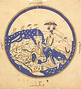

Приклад топографічної карти
Класифікація географічних карт
Географі́чна ка́рта або ма́па — зображення території земної поверхні на площині, зроблене у певному масштабі та проєкції та виконане за допомогою умовних знаків. До основних картографічних творів відносять також глобуси — об'ємні кулеподібні моделі Землі з нанесеним на них картографічним зображенням, виконані в певному масштабі і атласи — систематизовані цілісні зібрання карт, створені за єдиною програмою. Як приклад карт із різним охопленням території можна взяти карти світу, карти півкуль, карти материків і океанів, карти країн, карти областей, районів, карти заповідників, міст тощо. Карти складають на основі польових досліджень, аеро- і космічних знімків та інших картографічних джерел, статистичних і літературних даних.
Історія
Найдавнішою (близько 14 000 років) картою знайденою на теренах України, є мапа, вирізана на уламку бивня мамута з Межиріцької стоянки. Національному науково-природничому музеї НАН України. Давньогрецький географ Ератосфен Кіренський (близько 275—194 роки до н. е.) не тільки виміряв довжину земного меридіана (250 000 стадій) і обчислив радіус Землі (40 000 стадій), але й увів визначення «паралелей» та «меридіанів», довільно наніс їх на укладену ним карту заселених земель — «ойкумену». Цією картою користувались 4 століття — до кінця І століття. До наших днів дійшло 27 карт давньогрецького вченого Клавдія Птолемея (близько 90—160 н. е.) з еллінізованого єгипетського міста Александрія, які він додав до своєї наукової праці «Географія». У ній він описав методику укладання карт, перелічив близько 8 тис. назв різних об'єктів відомої йому місцевості, в тому числі кілька сотень із географічними координатами, визначених за Сонцем і зірками. Птолемей також уперше використав сітку меридіанів і паралелей, яка мало чим відрізнялася від сучасної.
-
Глиняна табличка з картою Ніппуру, 1400 рік до н. е.
-
Частина давньоримської Пейтингерової таблиці, середньовічна копія
-
Карта світу Козьми Індикополова, VI століття
-

Арабська карта світу Аль-Ідрісі, XII століття
-
Герефордська карта світу, близько 1300 року
-
Карта Птолемея наведена в працях Йогана Шнітцера, 1482 рік
-
Карта світу Герарда ван Шагена, Амстердам, 1689 рік
У середні віки Землю зображували у вигляді кола або прямокутника, у центрі яких розміщували важливі міста, святі місця, на крайньому сході — рай, а на заході — пекло. У VI столітті одну з таких мап створив візантійський чернець Козьма Індикоплов. Зображена ним система світу розповсюдилася в тодішній Європі. Середньовічні картографи Європи і арабських країн креслили карти таким чином, що схід розташовувався нагорі карти, а північ, відповідно, ліворуч. Сам термін орієнтування походить від латинського слова (лат. oriens — схід). Цю традицію вони успадкували від давньогрецьких і давньоримських мореплавців, бо насправді, в морі набагато легше відшукати схід сонця, ніж північ.
Класифікація
-
Масштаб
За масштабом карти класифікують на:
-
оглядові — більший з 1 : 1 000 000;
-
оглядово-топографічні — від 1 : 1 000 000 до 1 : 500 000;
-
дрібномасштабні — від 1 : 200 000 до 1 : 100 000;
-
середньомасштабні — від 1 : 50 000 до 1 : 25 000;
-
великомасштабні — від 1 : 10 000 до 1 : 5000, загальногеографічні карти такого масштабу називають топографічними;
-
топографічні плани — від 1 : 2000 до 1 : 500.
Відмінні за масштабом карти мають різну точність і детальність зображення, ступінь генералізації і нерідко різне призначення.
-
-
Зміст
За змістом виділяють дві великі групи карт — загальногеографічні і тематичні.
-
Загальногеографічні.
Докладно зображають сукупність географічних об'єктів земної поверхні певної місцевості (рельєф, гідрографію, рослинно-ґрунтовий покрив, населені пункти, господарські об'єкти, комунікації, кордони тощо) без виділення окремих зображуваних елементів з поміж інших. Складаються за єдиними вимогами до вмісту, оформлюються на математичній основі. Здебільшого будуються на основі номенклатурних аркушів. За масштабом поділяють на оглядові та топографічні.
- Оглядово-географічні. Карти, знаменник масштабу яких більший за 1 000 000. Застосовуються для відображення значних за площами ділянок земної поверхні або всієї поверхні загалом.
- Топографічні. Докладно зображують частину земної поверхні
в заздалегідь визначених нормативними документами умовних позначеннях і на
математичній основі. В Україні складаються в масштабах від 1 : 10 000 до 1 : 1 000
000. Різновидом топографічних карт є топографічні плани, відтворення невеликих
ділянок місцевості в ортогональній проєкції без урахування кривини земної поверхні,
з масштабом від 1 : 5000 до 1 : 500.
-
Тематичні карти.
Показують розміщення окремих елементів місцевості, взаємозв'язки і динаміку природних або суспільних явищ, населення, економіки, соціальну сферу. Переважно, їхній зміст всебічно розкриває певну тему. Змальовуються лише окремі складові земної поверхні, що безпосередньо пов'язані з темою карти або потрібні для орієнтування, чи подання зв'язків явищ з їх просторовим розташуванням на земній поверхні. Розрізняють геологічні, тектонічні, сейсмічні, гідрогеологічні, рельєфу, геоморфологічні, геохімічні, кліматичні, агрокліматичні, ґрунтів, геоботанічні, зоологічні, ландшафтні, економічні, промисловості, окремих галузей, транспорту. Їх можна поділяти за двома характеристиками.
За зображуваним об'єктом:
-
Карти природних явищ охоплюють всі компоненти природного середовища і їхні поєднання. До цієї групи входять карти геологічні (тектонічні, новітньої тектоніки, четвертинних відкладень, гідрогеологічні, інженерно-геологічні, геологічного районування), геофізичні, геоморфологічні (морфометричні, рельєфу, схилів, густоти розчленування рельєфу, глибини дна Світового океану), метеорологічні і кліматичні, біогеографічні (зоологічні, ботанічні, фенологічні), океанографічні (океанів та морів, шельфу), гідрологічні, ґрунтові, карти фізико-географічних ландшафтів і фізико-географічного районування тощо.
-
Карти суспільних явищ відбивають об'єкти та події, пов'язані з існуванням та діяльністю людини. Зокрема, карти населення (чисельності, розміщення, демографічні, етнографічні, антропологічні, міграції), економічні (загально-економічні, промисловості, транспорту і зв'язку, сільського господарства та інших галузей), політичні, медико-географічні, історичні, соціально-географічні. Кожен із згаданих підрозділів також може ділитись.
За кількістю зображуваних показників: аналітичні, комплексні, синтетичні.
Зображення території Європи на різних тематичних картах
Для тематичних карт класифікації за просторовим охопленням можуть будуватись не на основі ієрархії адміністративних одиниць, а за іншими критеріями. Наприклад, класифікація на основі певного фізико-географічного чи економіко-соціального районування. Тематичні карти поділяються також за орієнтацією на кінцевого споживача — спеціальні карти: навчальні, туристичні, навігаційні, кадастрові та інші.
-
-
-
Статус
Карти класифікуються за їхнім правовим статусом:
-
Міжнародні. Мають наддержавний правовий статус, створюються згідно з вимогами відповідних міжнародних організацій, уповноважених на те державами-членами. На основі рішень міжнародних світових конгресів була створена карта світу масштабу 1 : 1 000 000.
-
Національні. Створюються відповідними уповноваженими картографічними органами окремих держав і є офіційними документами для різних органів державної влади.
-
Відомчі. Створюються окремими органами державної влади, громадськими організаціями, науково-виробничими установами заради використання з різноманітними цілями в підвідомчих закладах.
-
-
Призначення
За призначенням карти поділяються на:
-
науково-довідкові — призначені для виконання за ними наукових досліджень і отримання якнайбільше повної інформації;
-
культурно-освітні — призначені для поширення знань, ідей;
-
технічні — стосуються об'єктів та умов, потрібних для вирішення якихось технічних завдань;
-
навчальні — використовуються як наочність для вивчення географії, історії, геології та інших дисциплін;
-
туристичні — можуть бути позначені подорожні маршрути, відомі місця; та інші.
-
-
Охоплення території
За охопленням території карти поділяються на:
-
Світу (карта земної кулі).
-
Океанів (карта всіх, або окремих океанів).
-
Материкові (карта окремого материка, «Африка», як приклад). Всередині материків карти класифікують залежно від обраної ознаки
Мапа Африки
-
політико-адміністративні, бувають груп держав, окремих держав, областей, штатів, кантонів, районів тощо;
-
фізико-географічні, ділять на карти природних районів, регіонів;
-
економічні, поділяють на карти економічних районів;
-
-
Країн і регіонів (карта однієї країни, «Україна», як приклад).
-
-
Характер й ступінь практичної направленості
Спеціальні карти, що призначені для вирішення певного кола завдань або для використання певною категорією користувачів. Залежно від характеру й ступеня практичної направленості змісту розрізняють:
-
Навчальні. Використовують в процесі навчання в середній або вищій школі, як наочний засіб на професійних курсах.
-
Технічні. Застосовують для вирішення певних технічних і проєктних завдань.
-
Навігаційні. Використовують для вирішення завдань морської навігації.
-
Довідково-інформаційні. Створюють задля наочного представлення певних відомостей про територію в їхньому просторовому співвідношенні.
-
Туристські. Надають наочну інформацію про визначні місця та заклади гостинності певної території.
-
Культурно-освітні. Створюють з метою поширення в суспільстві певних знань, ідей.
За функціональним призначення розрізняють:
-
Інвентаризаційні карти, які відбивають об'єкти й явища відповідно до їхньої класифікації, що враховує інтереси даної області діяльності.
-
Оцінкові карти, що показують необхідність або ефективність використання природних або соціально-екологічних умов й ресурсів для тих чи інших цілей. .
-
Індикаційні
-
Прогнозні
-
Рекомендаційні
Італійська карта Вінченцо Марія Коронеллі 1690 року, де обидва береги Наддніпрянщини з Києвом позначені як «VKRAINE ou PAYS DES COSAQVES» («Україна або Країна козаків»); слово «OKRAINA» («Окраїна») вжито стосовно Задоння та Рязані, Російської Федерації
-
-
Способи дослідження
Залежно від способів дослідження карти бувають:
-
Аналітичні карти показують окремі сторони або властивості явищ без відбиття зв'язків та взаємодії з іншими їх сторонами або властивостями (температурою повітря, напрямком і силою вітру, опадами, крутизною схилів тощо).
-
Синтетичні карти дають цілісну інтегральну характеристику явищ, при формуванні яких враховуються складові частини конкретного явища та наявні між ними зв'язки (ландшафтні, кліматичного чи гідролого-кліматичного районування тощо).
-
Комплексні карти представляють декілька взаємопов'язаних явищ або їх складових, кожне явище в своїх показниках.
-
-
Об'єктивність й вірогідність
За ступенем об'єктивності й вірогідності змісту розрізняють:
-
Карти-спостереження містять дані, що отримані безпосередньо у підсумку спостережень (опадів, забруднення атмосфери).
-
Карти-висновки складають шляхом обробки фактичних даних та їх інтерпретації відповідно до уявлення автора про явище, що зображується (наприклад, клімат).
-
Гіпотетичні карти складають за недостатньої кількості фактичних даних на основі гіпотез та припущень (дрейфу материків).
-
Тенденційні карти показують явно спотворену дійсність.
-
Створення карт
Створення карт проводиться за допомогою картографічних проєкцій — способу переходу від реальної, геометрично складної земної поверхні до площини карти. Для цього спочатку переходять до математично правильної фігури еліпса або кулі, а потім проєктують зображення на площину за допомогою математичних залежностей. При цьому використовують різні допоміжні поверхні: циліндр, конус, площину.
-
Циліндричні проєкції використовуються для карт світу — модель Землі ніби вміщують у циліндр і уявно проєктують на його стінки земну поверхню. При розгортанні циліндра утворюється плоске зображення; меридіани і паралелі у цій проєкції — прямі лінії, що проведені під кутом, лінія найменших спотворень — екватор.
-
Конічні проєкції найчастіше використовуються для зображення Євразії, Азії, світу. Для цього один або декілька конусів насаджуються на модель Землі і на них переносять всі точки земної поверхні. Меридіани у такій проєкції — прямі лінії, які виходять з однієї точки (полюса), а паралелі — дуги концентричних кіл.
-
Для зображення на картах окремих материків чи океанів використовують азимутальні проєкції. До того-ж на площину проєктують поверхню материка. Точкою нульових спотворень є точка дотику площини до земної поверхні. Водночас периферійні частини карти мають в такій проєкції найбільше спотворення. Паралелі у прямих азимутальних проєкціях (точка дотику — полюси) зображаються концентричними колами, а меридіани — прямими (променями). У такій проєкції складені карти Антарктиди, приполярних районів. У поперечно-азимутальній проєкції (точка дотику — на екваторі) складена карта півкуль. У ній меридіани і паралелі — криві, за винятком екватора і середніх меридіанів півкуль. Для зображення окремих материків точки дотику вибирають у їх центрі (карти Африки, Австралії, Америки). За сучасних умов картографічні проєкції будуються також з допомогою математичних розрахунків без допоміжних поверхонь. Їх називають умовними.
Внаслідок кулястості Землі на мапах існує спотворення довжин, кутів, форм та площ. Вони є різних видів, а їх величина залежить від виду проєкції, масштабу карти і охоплення території. Виявити на карті спотворення довжин вздовж меридіанів можна, порівнявши відрізки меридіанів між двома сусідніми паралелями. Якщо вони рівні, то спотворень немає.
Про спотворення відстаней на паралелі свідчить співвідношення довжин відрізків екватора і паралелі 60° широти між сусідніми меридіанами. Коли відсутні спотворення, то відрізок екватора рівно вдвічі більший, ніж відрізок 60-ї паралелі.
Про спотворення кутів, яке є притаманним для більшості карт, можна зробити висновок у тому випадку, коли паралелі і меридіани не утворюють між собою прямих кутів.
Розрізнити спотворення форм можна порівнявши довжину і ширину якогось географічного об'єкта на карті і глобусі. Якщо співвідношення в обох випадках рівні, то спотворень форм немає. Ще простіше це зробити можна, порівнявши клітинки сітки на одній широті: коли вони однакові, то це свідчить про відсутність спотворень форм на даній географічній карті.
Якщо площі двох клітинок між сусідніми паралелями рівні, то з цього виходить, що на карті немає спотворення площ.
Залежно від призначення карт, для них підбирають такі проєкції, на яких один із видів спотворень може бути відсутнім, або дуже незначним. За характером спотворень картографічні проєкції поділяють на: рівновеликі (немає спотворень площ), рівнокутні (немає спотворень кутів) і довільні (існують всі види спотворень).
Характеристики карт
Географічні карти характеризуються рядом спільних показників:
-
Вірогідність. Міра відповідності відомостей про місцевість, природні явища і процеси на ній, які можна отримати з карти, справжній стан речей на дату або період користування картою.
-
Вимірність. Можливість вимірювати відстані, кути, площі, висоти, перевищення, координати та інші характеристики місцевості за допомогою карти. Може дуже варіюватись від призначення картографічних творів, їхнього змісту.
-
Наочність. Якісна характеристика зорового сприйняття просторового розташування елементів на карті, легкість з якою кінцевий користувач зможе сприйняти інформацію яку укладач картографічного твору намагався передати на ній.
-
Читаність. Фізична можливість зорового розпізнавання складників та деталей карти, залежно від обраного матеріалу носія. Наприклад, вважається що людське око здатне розрізняти дві рівнобіжні лінії, якщо відстань між ними не менша за 0,2 мм. Для типографських способів нанесення, які дозволяють їх робити суцільними в такому масштабі. Але для растрових зображень за допомогою точок фарби, потрібно враховувати вже розмір власне растру.
-
Сучасність.Відповідність зображеному стану місцевості, або наукових знань про взаємозв'язок зображуваних процесів і явищ, реальному стану речей на дату користування. Особливо важливий для топографічних карт і планів.
Електронні карти
З останньої чверті 20 століття незамінним інструментом картографа став комп'ютер. Значна частина картографії, особливо на рівні збору даних, внесена в географічні інформаційні системи (ГІС). Функціональність карт була значно вдосконалена завдяки технології, котра спрощує накладання просторово розташованих змінних, на наявні географічні карти. Накладення на карту місцевої інформації, як-от рівня опадів, розподілу місць дикої природи або демографічних даних, забезпечує більш досконалий аналіз і прийняття кращих рішень.
Навіть якщо ГІС не залучені, більшість картографів зараз застосовують різноманітні комп’ютерні графічні програми для створення нових карт.
У продажу доступні інтерактивні комп’ютеризовані карти, які дозволяють користувачам збільшувати або зменшувати масштаб, іноді шляхом заміни однієї карти на другу іншого масштабу, з центром, де це можливо, в одній точці. Внутрішні автомобільні глобальні навігаційні супутникові системи — це комп’ютеризовані карти з плануванням маршруту та підказками, які визначають розташування користувача за допомогою супутників. З точки зору комп’ютерного спеціаліста, збільшення масштабу передбачає одну дію або поєднання:
-
заміна карти на більш докладну;
-
збільшення тієї самої карти без укрупнення пікселів, отже, показуючи більше деталей, видаляючи менше даних порівняно з менш докладною версією;
-
збільшення тієї самої карти з укрупненням пікселів (замінених прямокутниками пікселів); додаткові деталі не показуються, але, залежно від якості зору, можливо, вдасться побачити більше деталей; якщо на дисплеї комп’ютера сусідні пікселі відбиваються не окремо, а натомість перекриваються (це не стосується РК-дисплея, але може застосовуватися для електронно-променевої трубки), тоді заміна пікселя прямокутником пікселів, показує більше деталей. Різновидом цього методу є інтерполяція.
Наприклад:
Зазвичай (2) застосовується до файлу у форматі переносного документа (PDF) або іншого формату на основі векторної графіки. Збільшення деталей обмежується інформацією, що міститься у файлі: збільшення кривої може зрештою призвести до серії стандартних геометричних фігур, таких як прямі лінії, дуги кіл або сплайни.
(2) може застосовуватися до тексту та (3) до контуру об’єкта карти, наприклад лісу чи будівлі.
(1) може застосовуватися до тексту за потреби (відображення міток для додаткових функцій), тоді як (2) застосовується до решти зображення. Текст необов’язково збільшується під час укрупнення масштабу. Подібним чином, дорога, зображена подвійною лінією, може ставати або не ставати ширшою у разі збільшення.
Карта також може мати шари, які є частково растровою графікою та частково векторною графікою. Для одного растрового графічного зображення (2) застосовується, доки пікселі у файлі зображення не будуть відповідати пікселям дисплея, після цього застосовується (3).